Jiayue (Nichole) Yang
Senior Software Engineer | AI Engineer | Distributed Systems, Storage, Telemetry & Automation
Contact Me Download Resume

I am a Senior Software Engineer with 6 years of experience designing and delivering distributed systems, backend platforms, and infrastructure automation across VMware storage systems and Citi credit-risk analytics platforms. My work spans disaster recovery, telemetry and data platforms, AI-assisted troubleshooting, Kubernetes, production reliability, and customer-facing SDKs and infrastructure workflow automation tools used by enterprise customers across both on-premises and cloud environments.
I have a strong track record of turning complex infrastructure and operational challenges into scalable, production-ready systems. Key achievements include reducing disaster recovery time by over 90%, cutting telemetry storage costs by 70%, and improving regression detection effectiveness by 75% through machine learning and data-driven automation.
Beyond implementation, I take end-to-end ownership of engineering problems, from architecture and system design to development, production rollout, and operational improvement. I work closely with cross-functional teams to translate business and reliability requirements into practical technical solutions, with a consistent focus on fault tolerance, data trustworthiness, scalability, and operational efficiency.
I hold full working rights in Australia (no sponsorship required) and am currently seeking senior software engineering opportunities in Melbourne or Sydney.
October 2021 - June 2026
Featured Projects
Agentic Troubleshooting and Failure Intelligence Platform
Core MemberPython ADK | Java Spring | BERT | RAG | MCP
- Integrated BERT-based failure classification and similarity matching into vSAN test workflows, automatically categorizing reports and clustering related historical cases across thousands of daily test reports.
- Extended and deployed the platform as a Claude-powered troubleshooting agent on VCF/VKS Kubernetes for 100+ team members, combining domain-aware RAG with read-only MCP diagnostics across health, logs, configuration, and network evidence; bridged symptom-to-root-cause terminology gaps, improved Top-5 recall from 68% to 90%, achieved 78% Root Cause Match@3, and refined retrieval using user feedback.
Performance Modeling & Anomaly Detection Platform
Project LeadPython | Flask | Kubernetes | Linear Regression | Cubist | LSTM
- Built a performance prediction tool to enhance the reliability of vSAN system testing and monitoring, reducing triage time by 40% and enabling proactive anomaly detection that identified 75%+ of regressions before test completion.
- Designed and deployed a full-stack Flask web application on Kubernetes to ensure scalability and reliability for automated system-test performance data collection and storage, supporting downstream machine learning model training.
- Led a team of three interns in developing and optimizing predictive models, driving feature engineering, correlation analysis, and hyperparameter tuning across linear regression, Cubist, and LSTM models to improve prediction accuracy by 32%.
Enterprise Telemetry Platform
Project LeadPython | SQL | Superset | Kafka | GitHub Actions | Jenkins
- Led the architecture and evolution of a high-volume telemetry platform serving 55K+ deployments and 11K+ customers, owning end-to-end collection, Kafka-based ingestion, ETL pipelines, and analytics delivery powering 140+ business dashboards.
- Designed a runtime-configurable telemetry framework and re-architected high-volume data processing to improve collection scalability and release agility, reducing hourly memory peaks by 60% without disrupting downstream analytics.
- Established telemetry governance through automated CI/CD validation, end-to-end monitoring and alerting, and storage lifecycle management, improving dashboard accuracy by 30%, reducing storage usage by 75%, and accelerating issue detection.
- Led technical coordination across telemetry producers and downstream consumers, helping 10+ engineers independently build product dashboards to track feature adoption and usage while standardizing shared data-pipeline and platform practices.
Additional Projects
Distributed Site Takeover and Disaster Recovery
Core MemberPython | C++ | Shell
- Designed and delivered a distributed disaster-recovery framework for a two-site synchronous storage system, establishing the first automated recovery path and enabling up to 70% of affected VM workloads to restart on the surviving site during severe failures.
- Architected a leader-worker coordination protocol and persistent state machine to orchestrate distributed recovery across storage hosts, enforce stage prerequisites, aggregate progress and failure status, and safely resume execution following leader failure.
- Expanded Takeover coverage by diagnosing cross-component production edge cases, delivering recovery automation for disconnected VMs, vSAN File Services, and other services, and publishing reusable workarounds and knowledge-base guidance.
Continuous Unit Testing & Automated Failure Triage Platform
Project LeadPython | GitHub Actions
- Designed and scaled Python unit-test infrastructure integrated into commit precheck workflows, automatically validating every change for 100+ team members, reducing manual testing by 60%, and driving iterative improvements from user feedback.
- Built an automated failure-triage system that correlated code changes and dependency failures to identify root causes and route issues to the responsible engineer, cutting triage effort by 80% and reducing pipeline downtime by 45%.
- Implemented module-level pass-rate monitoring and daily GitHub Actions reporting to Google Chat, giving teams proactive visibility into pipeline health and faster feedback on regressions.
Test Infrastructure Resource & Queue Management Platform
Project LeadPython | Flask | GitHub APIs
- Designed and delivered an AI-assisted Flask resource-orchestration platform in 14 days using Cursor, integrating internal infrastructure and GitHub APIs for priority scheduling, quota enforcement, and automated resource lifecycle management; automated allocation, capacity monitoring, usage tracking, and bottleneck alerts, reducing infrastructure waste by 60% and improving operational visibility.
vSAN Customer-Facing Automation & SDKs
Project LeadC# | .NET | Python | Java | Bazel
- PowerCLI vSAN Module: Led development of PowerShell cmdlets for vSAN across six PowerCLI releases, enabling large-scale automation and integration into enterprise DevOps pipelines. Achieved 2,000+ monthly active users and adoption by 200+ enterprise customers.
- VCF Operations Orchestrator vSAN Plugin: Delivered a Java-based plugin and 30+ prebuilt workflows, translating complex architectural requirements into automated drag-and-drop solutions; reduced manual configuration effort by 75% for high-profile clients including Morgan Stanley and FedEx.
- vSAN SDK: Directed the lifecycle of multi-language SDKs in Python and Java using OpenAPI and Bazel; authored comprehensive sample code and developer guides that standardized how third-party partners interact with vSAN APIs.
Distributed Data Migration Services
Core MemberJava | Spring Boot | Kubernetes
- Developed Kubernetes-based data migration services, orchestrating large-scale VM movement and system transitions across distributed environments. Designed and implemented highly reliable REST APIs with robust error handling and retry mechanisms to ensure fault-tolerant data transfer and system interoperability.
- Developed transition checks, dependency services, authentication, and telemetry for tracking adoption and migration status.
Frontend & Full-Stack Projects
TypeScript | React
- vSAN Management UI: Contributed to disk-management functionality for vSAN in the vSphere Client management interface.
- StockView | Personal Project: Built a portfolio dashboard to address gaps in my own investing workflow, integrating read-only Schwab balances and positions with custom holding groups, target tracking, and valuation snapshots.
August 2020 - October 2021
Scenario Manager - Credit Risk Management System
Java | Spring MVC | MongoDB
- Developed Java backend services for an enterprise credit-risk analytics platform, implementing macroeconomic scenario functionality supporting regulatory stress testing, financial forecasting, and portfolio risk management.
January 2020 - May 2020
Python | AWS Lambda | DeepAR | SageMaker | DynamoDB | Kibana | Elasticsearch
- Built an early-stage real-time water analytics application and translated field research and water-industry user stories into an operational Kibana dashboard.
- Developed time-series forecasting with Holt-Winters and AWS DeepAR, predicting water flow 204 seconds ahead with 91% accuracy.
- Automated model training, streaming visualization, anomaly detection, and alerts using AWS Lambda, SageMaker, DynamoDB, Elasticsearch, and Node-RED, enabling an end-to-end monitoring workflow.
March 2016 - January 2017
Python | Java | Tableau
- Supported the mTaxi healthcare-innovation project from pilot through launch, contributing to a product recognized as the FY2018 Best Project at Medtronic's annual meeting.
- Analyzed user behavior with Python and Tableau and translated findings into product and operational recommendations.
- Designed a notification system that improved the handling of non-compliant business-trip issues by 80%.
- Gathered stakeholder requirements, documented three internal mobile applications, and executed regression and acceptance testing to improve delivery readiness and cross-team alignment.
Selected architecture case studies and public projects spanning AI-assisted troubleshooting, distributed systems, infrastructure automation, and analytics.
Featured Case Studies
AI Engineering Case Study
AI Troubleshooting & Failure Intelligence
Core Member | Python, BERT, RAG, MCP, Kubernetes
Evolved a production failure-classification workflow into an evidence-driven troubleshooting agent that grounds diagnosis in enterprise knowledge and read-only system evidence.
68% to 90%Top-5 recall
89%Evidence support
84%Tool-selection F1
78%Root Cause Match@3
Read case studyClose case study
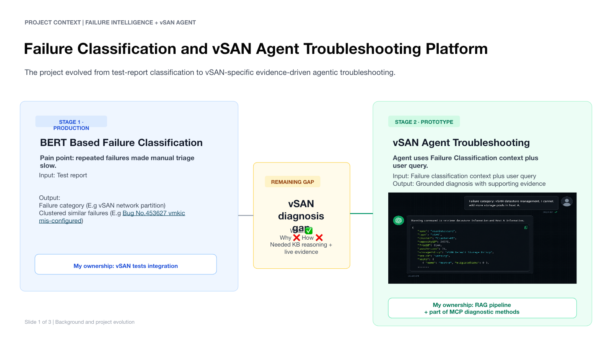
Challenge
BERT-based classification could identify failure categories and similar historical cases, but engineers still needed to explain why a failure occurred and determine what evidence to inspect next.
My Role
Integrated classification into vSAN test workflows, designed the RAG pipeline, contributed read-only MCP diagnostic methods, and helped deploy and refine the agent for 100+ team members.
Engineering Approach
- Combined rule-based and LLM query expansion to bridge symptom language and product terminology.
- Used vector retrieval followed by cross-encoder reranking to balance recall and precision.
- Separated AI reasoning from system execution through deterministic, read-only MCP tools.
- Evaluated retrieval, grounding, and tool planning against 120 labeled cases across five knowledge areas.
Architecture and Evaluation
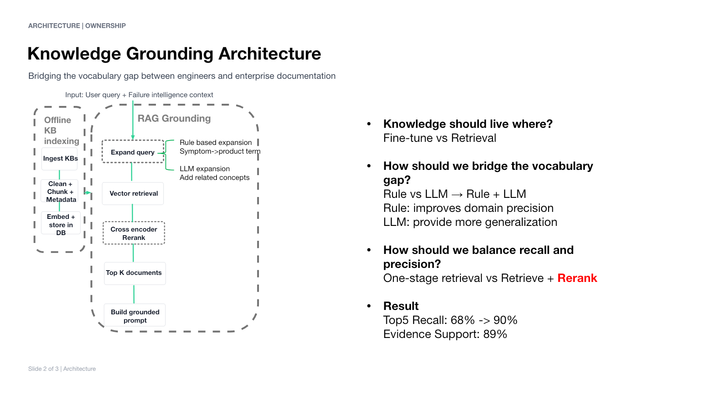
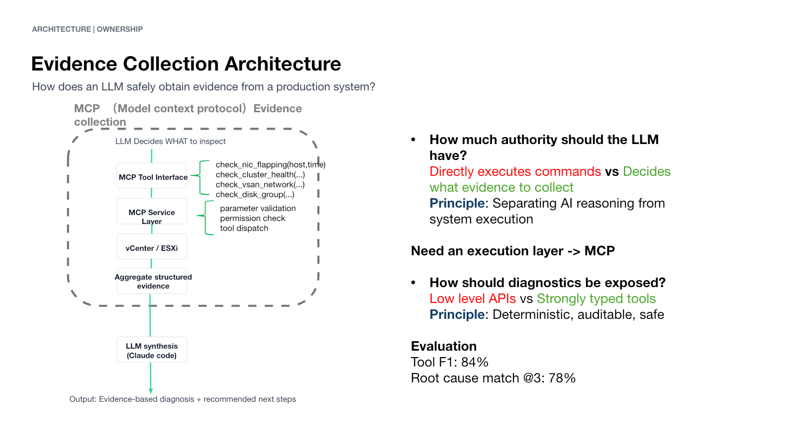
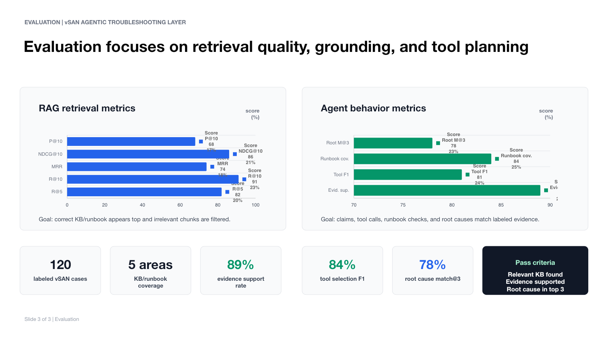
Data Platform Case Study
Enterprise Telemetry & Analytics Platform
Project Lead | Python, SQL, Kafka, ETL, Superset, CI/CD
Led a high-volume telemetry platform from product-side collection through ingestion, transformation, governed datasets, and analytics used for product and business decisions.
140+Business dashboards
60%Lower memory peaks
75%Less storage usage
30%Higher dashboard accuracy
Read case studyClose case study
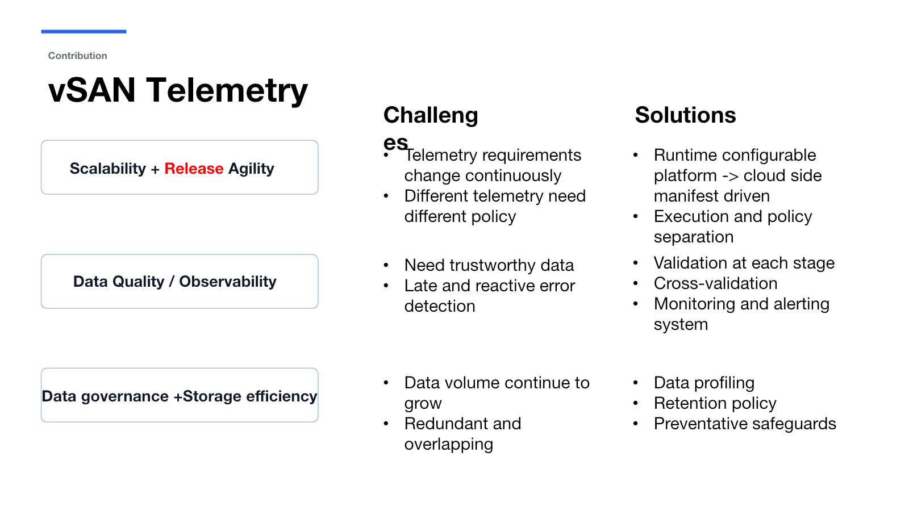
Challenge
Telemetry requirements changed continuously while data volume and policy differences increased. Late error detection, overlapping data, and production memory spikes created risks for both platform reliability and analytics trust.
My Role
Led the architecture and evolution of collection, Kafka-based ingestion, ETL processing, governed reporting datasets, monitoring, and analytics delivery. Coordinated producers and downstream dashboard teams across the organization.
Engineering Approach
- Separated telemetry policy from execution through runtime-configurable collection.
- Added validation, cross-validation, monitoring, and alerting throughout the pipeline.
- Introduced profiling, retention controls, and preventative safeguards for data governance.
- Profiled a multi-stage collection path, redesigned its highest-cost processing stage, and verified the end-to-end workflow.
Stakeholder Consumption and Performance
The governed reporting layer turns curated telemetry into capacity and consumption views that stakeholders use to understand adoption, infrastructure trends, and planning signals.
Demo data: All values in the dashboard below are fictional and are shown only to demonstrate the type of telemetry consumed and visualized.
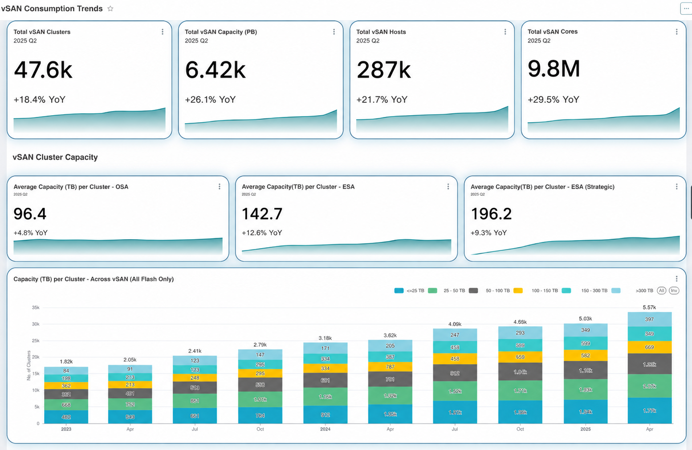
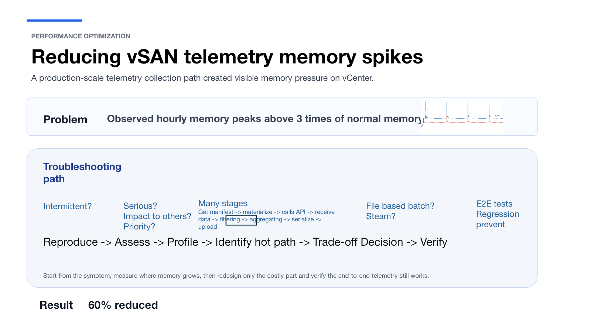
Distributed Systems Case Study
Distributed Recovery Orchestration
Core Member | Python, C++, Distributed Coordination, State Machines
Designed a host-driven recovery framework that coordinates safe, resumable service recovery from a surviving site when the original management service is unavailable.
Up to 70%Workloads restarted
Leader-workerParallel coordination
PersistentRecovery state
ObservableRecovery progress
Read case studyClose case study
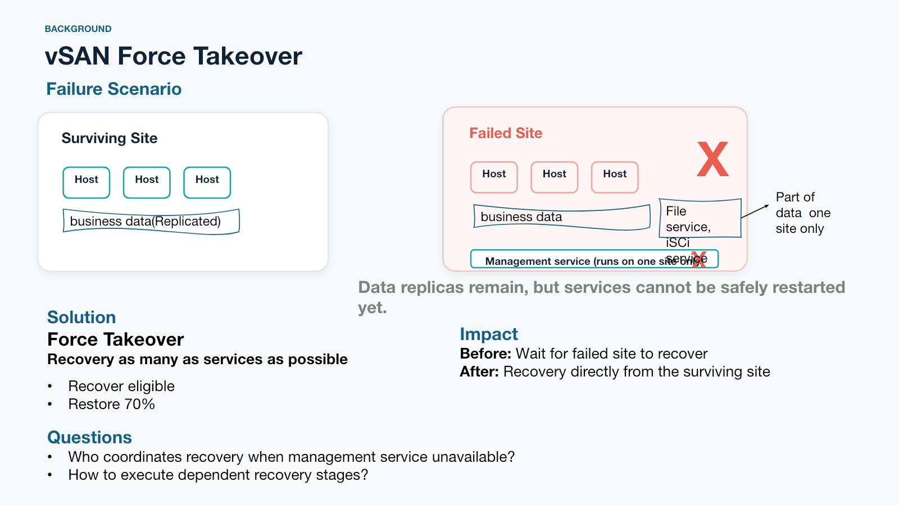
Challenge
After a severe site failure, replicated data could remain available while management and dependent services could not restart. Surviving hosts needed to coordinate recovery and execute dependent stages without the original management service.
My Role
Designed and delivered the distributed recovery framework, leader-worker coordination protocol, persistent workflow state, and recovery automation for additional workloads and services.
Engineering Approach
- Centralized ownership through a leader while distributing recovery work across hosts in parallel.
- Used a persistent state machine to enforce prerequisites and make recovery ordered, resumable, and observable.
- Maintained one progress view so the coordinator could aggregate stage completion and failure status.
- Made workflow state the source of truth so execution could resume safely after interruption.
Coordination and Workflow Design
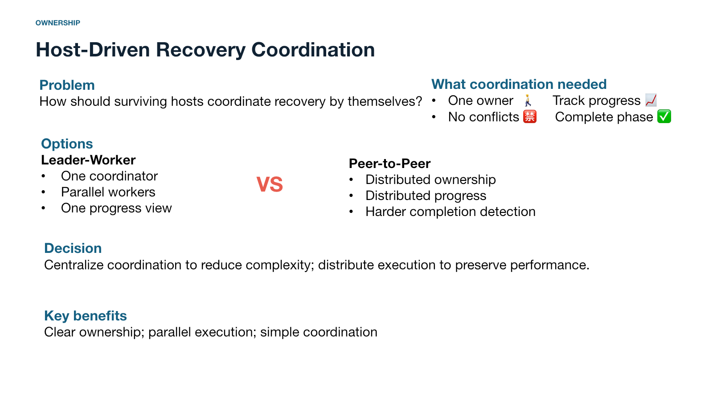
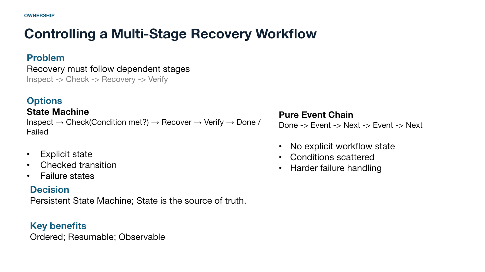
Public Projects
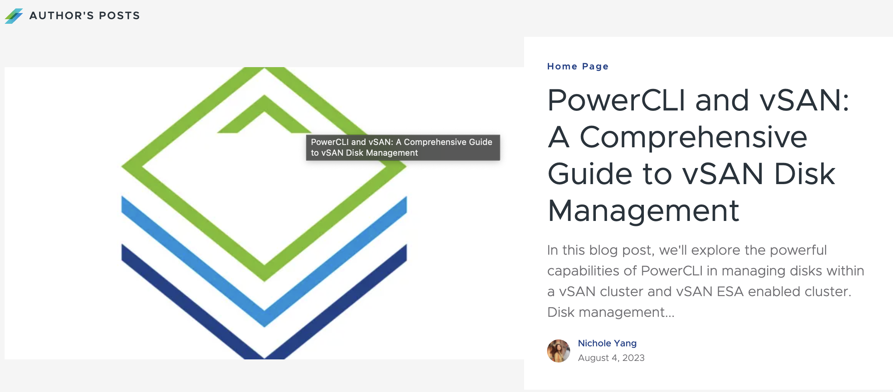
Infrastructure Automation
PowerCLI vSAN
VCF PowerCLI provides PowerShell modules for automating VMware environments. I led vSAN cmdlet development across six releases, giving administrators repeatable ways to inspect, configure, and manage vSAN storage at scale.
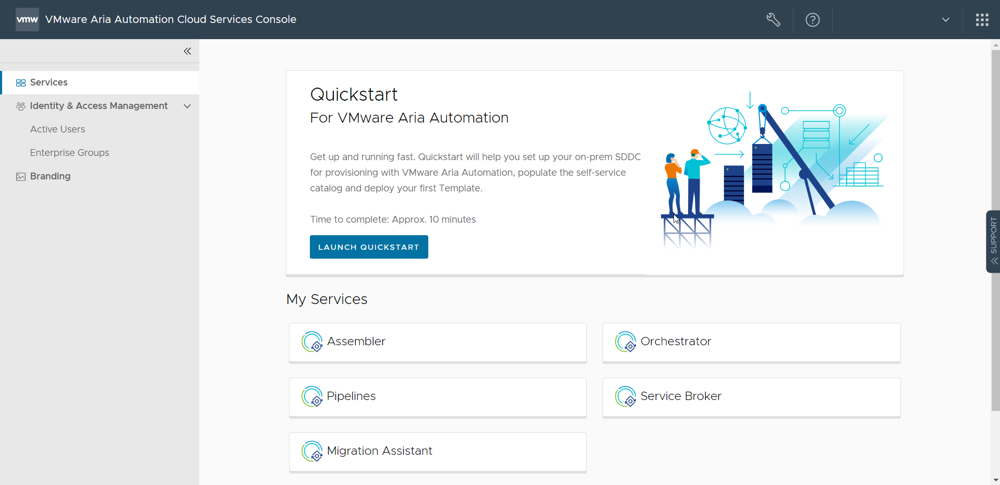
Workflow Automation
VCF Operations Orchestrator vSAN Plugin for VCF
This plugin extends VCF Operations Orchestrator with 30+ reusable workflows for automating vSAN administration. I developed and released four versions, including version 9.0, translating complex storage operations into reusable orchestration workflows.

Full-Stack Web Application
Synphony - Music Sharing Studio
A full-stack music-sharing application built to explore an end-to-end product experience, from interactive user flows and application logic through deployment.

Analytics & Machine Learning
Water Analytics Application
An early-stage real-time analytics application combining AWS services, streaming visualization, anomaly detection, and time-series forecasting to predict water flow and surface operational alerts.
2018- 2020
Master of Science in Information Technology
- Business Intelligence and Data Analytics
GPA: 3.6/4.3
Information Systems Assistant: Supported students by providing academic resources, gathering and translating user requirements into stakeholder recommendations, and maintaining accurate, up-to-date database records.
Relevant courses:
Web Application Development, Object Oriented Programming in Java, Database Management, Data Structure, Linux & Open Source, Internet of Things, Unstructured Data Analysis, Big Data and Data Science
2014 - 2018
Bachelor of Management in Information Management and System
(GPA: 3.7/4.0) Merit Base First Prize Scholarships for Outstanding Student and Social Practice
Relevant courses:
Advanced programming language(C), Object-Oriented Programming(C#), Linear Algebra,
Advanced Mathmatics, Computer Network, Software Testing, Advanced Database Technology
Finance, Accounting, Financial Trading Information System Design, Financial Data Analysis
Map © OpenStreetMap contributors, CC BY-SA 2.0; cropped from Wikimedia Commons.